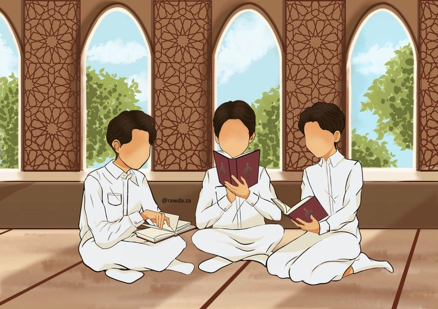

01
Toleransi
Toleransi adalah sikap menghargai perbedaan keyakinan, pendapat, dan kebiasaan tanpa memaksakan kehendak kepada orang lain.
Pelajari Materi →Assalamu’alaikum warahmatullahi wabarakatuh
Mari memahami moderasi beragama melalui toleransi, menghargai perbedaan, dan menjaga kerukunan dalam kehidupan sehari-hari.
✦ Materi Utama ✦
Pelajari tiga materi penting berikut secara berurutan.
Toleransi adalah sikap menghargai perbedaan keyakinan, pendapat, dan kebiasaan tanpa memaksakan kehendak kepada orang lain.
Pelajari Materi →
02Ayat ini mengajarkan bahwa manusia memiliki pilihan keyakinan. Kita tetap teguh dalam iman dan menghormati orang yang berbeda.
Pelajari Materi →Ayat ini menegaskan kemuliaan menjaga kehidupan manusia. Hindari kekerasan, perundungan, dan tindakan yang merusak kedamaian.
Pelajari Materi →
✦ Aktivitas ✦
Mari latih sikap toleran melalui diskusi sederhana bersama teman. Dengarkan pendapat orang lain dengan santun dan berikan tanggapan tanpa merendahkan.
Diskusikan satu contoh perbedaan yang ada di sekolah atau lingkunganmu. Tuliskan cara menjaga kerukunan dalam situasi tersebut.
✦ Hasil Aktivitas ✦
Isi data berikut sesuai dengan hasil diskusi kelompokmu.
✦ Evaluasi ✦
Yuk, uji pemahamanmu tentang materi toleransi!
✦ Kesimpulan ✦
Toleransi bukan berarti mencampurkan keyakinan, melainkan menghormati hak setiap orang untuk menjalankan keyakinannya. Dengan sikap saling menghargai, kita dapat menjaga kedamaian dan memelihara kehidupan bersama.